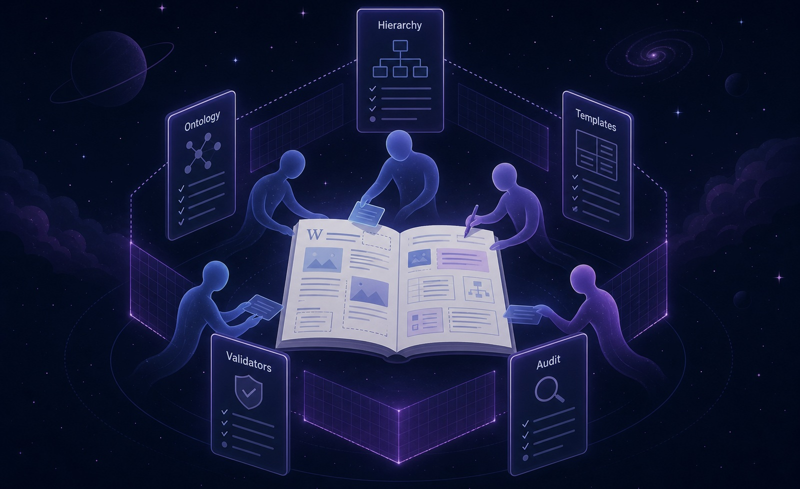

May 13, 2026 · Knowledge systems
Knowledge Work, With Tests
A year of building a public research wiki with LLM agents—and moving governance, ontology, templates, validation, and audit history into the repository itself.
Writing
Longer accounts of the decisions, failures, and changing ideas behind the work. These pieces cover production architecture, AI-assisted software development, governed knowledge systems, and earlier experiments.

Selected writing
Published on the existing Abinash Blog while this portfolio becomes the primary index.
May 13, 2026 · Knowledge systems
A year of building a public research wiki with LLM agents—and moving governance, ontology, templates, validation, and audit history into the repository itself.
April 9, 2026 · Architecture
The architecture of a solo-built product spanning SwiftUI, Next.js, FastAPI, PostgreSQL, receipt intelligence, subscriptions, and production operations.
March 2026 · Model evaluation
The Scale250 manuscript: benchmark sensitivity, representation geometry, statistical controls, and explicit evidence boundaries across 25 models.
September 19, 2024 · Early project
An early natural-language interface for creating and managing calendar events, built while exploring tool calling and practical model-assisted applications.
Next investigations
The next technical notes will document the receipt-evaluation work behind TribeBills and the design of a frozen retrieval holdout for the Nepal Energy Wiki. The scoring harnesses are now implemented; the next step is to populate privacy-safe, frozen evaluation sets and report real results rather than synthetic fixture output.
Technical writing is most useful when it preserves the decisions that code alone cannot show: why a system took its shape, which approaches failed, and what evidence changed the direction.